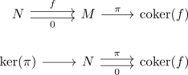
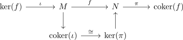
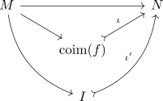
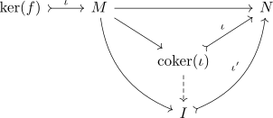

image in an abelian category
Definition / Proposition
Let $\mathcal{A}$ be an abelian category and $f: M \rightarrow N$ a morphism Then the image is defined as kernel / cokernel
where

Proof
using the image coimage isomorphism in an abelian category we get

where
- $M \twoheadrightarrow \mathrm{coker}(\iota)$ is an epi (cf. map into cokernel as epimorphism)
- $\mathrm{ker}(\pi) \hookrightarrow N$ is a mono (cf. map out of kernel as monomorphism)
universal property
It suffices to show, that the coimage satisfies the universal property (cf. abelian category and coimage isomorphic to image) Suppose there exists an object $I'$ and a diagram

Then consider
By commutativity we conclude that
is the zero morphism. As $I \rightarrowtail N$ is a mono, it follows that $\mathrm{ker}(f) \rightarrow M \rightarrow I$ is already the zero morphism. Hence there exists a unique morphism

Here uniqueness follows from the uniqueness of the induced morphism $\mathrm{coker}(\iota) \rightarrow I$, as any other morphism $\mathrm{coker}(\iota) \rightarrow M$ commuting with the bottom left square is solution to the universal property of $\mathrm{coker}(\iota)$